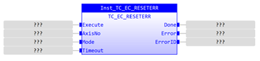
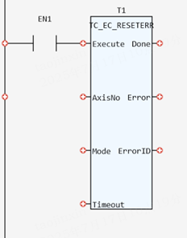

System Command.
Sends reset sequence to a drive.
|
Execute: BOOL; |
Rising edge requests execution |
|
AxisNo: USINT; |
The axis number of the drive to be reset |
|
Mode: INT; |
0: The 'Fault Reset' (bit 7) of DS402 control word is set high and then set low again after a hard coded timeout 1: Bit 7 is set high until the 'Fault Flag' (bit 3) of the status word goes low, or a timeout occurs |
|
Timeout: INT; |
Optional timeout in ms used during mode 1 operation. Range is 1 to 10000 ms |
|
Done: BOOL; |
TRUE when function has completed normally |
|
Error: BOOL; |
TRUE if a program error is detected |
|
ErrorID: UINT; |
Returned error number |
This function runs the error reset sequence on the drive control word. DRIVE_CONTROLWORD bit 8 is toggled high then low. This will instruct the drive to reset any errors in the drive where the cause of the error has been removed. When the input parameters are incorrect, the ErrorID will change to 256.
Inst_TC_EC_RESETERR(Execute:= (BOOL), AxisNo:= (USINT), Mode:= (INT), Timeout:= (INT));
(BOOL):=Inst_TC_EC_RESETERR.Done;
(BOOL):=Inst_TC_EC_RESETERR.Error;
(UINT):=Inst_TC_EC_RESETERR.ErrorID;


Not available.